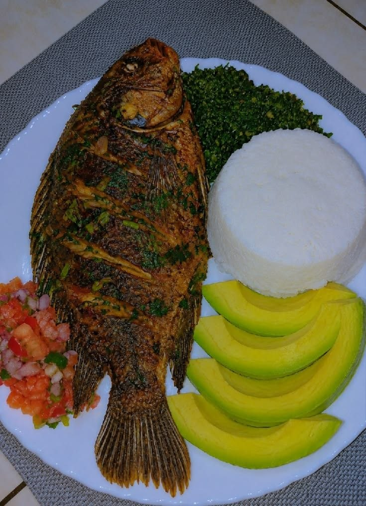
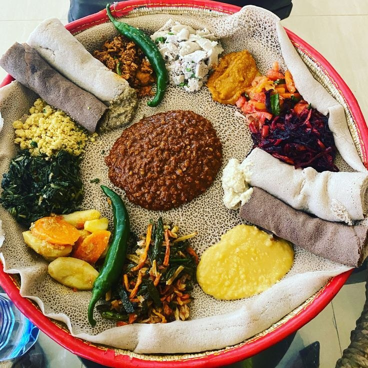

Doro Wat
Spicy chicken stew with berbere, served with injera. A classic Ethiopian comfort dish.
300 ETB
Spicy chicken stew with berbere, served with injera. A classic Ethiopian comfort dish.
300 ETB
Minced raw beef seasoned with mitmita and clarified butter. Served with cottage cheese.
350 ETB
Ground chickpea stew with garlic, ginger and tomato. A hearty vegan favourite.
195 ETB
Fried fish fillet with onions, peppers and a touch of turmeric. Light & flaky.
340 ETB
A colorful combination of flavorful Ethiopian vegetarian stews and vegetables served together on fresh injera
180 ETB
Traditional Ethiopian coffee, roasted and brewed fresh.
65 ETB
Shredded injera mixed with berbere, clarified butter, and spices. A flavorful and spicy Ethiopian favorite.
120 ETB
Tender pasta tossed with fresh vegetables, herbs, and a flavorful tomato sauce. A light and delicious meal.
185 ETB
Tender pieces of beef sautéed with onions, peppers, rosemary, and traditional Ethiopian spices.
250 ETB